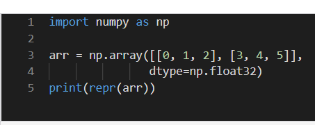

Chapter Goals:
Arrays
- NumPy arrays are basically just Python lists with added features. In fact, you can easily convert a Python list to a Numpy array using the np.array function, which takes in a Python list as its required argument. The function also has quite a few keyword arguments, but the main one to know is dtype. The dtype keyword argument takes in a NumPy type and manually casts the array to the specified type.
- The code below is an example usage of np.arrayto create a 2-D matrix. Note that the array is manually cast to np.float32
- 

- When the elements of a NumPy array are mixed types, then the array's type will be upcast to the highest level type.
- This means that if an array input has mixed int and float elements, all the integers will be cast to their floating-pointequivalents.
- If an array is mixed with int, float, and string elements, everything is cast to strings.
- The code below is an example of np.array upcasting. Both integers are cast to their floating point eqivalents.


Copying
Similar to Python lists, when we make a reference to a NumPy array it doesn't create a different array. Therefore, if we change a value using the reference variable, it changes the original array as well. We get around this by using an array's inherent copy function. The function has no required arguments,and it returns the copied array
.
- In the code example below, cisa reference toawhile dis a copy. Therefore, changingcleads to the same change in a, while changing ddoesn't change the value of b.


Casting
- We cast NumPy arrays through their inherent astypefunction. The function's required argument is the new type for the array.It returns the array cast to the new type.
- The code below shows an example of casting using the astypefunction. The dtypeproperty returns the type of an array.


NaN
- When we don't want a NumPy array to contain a value at a placeholder index,we can use np.nan to act as a placeholder. A common usage for np.nan is a filler value for incomplete data.
- The code below shows an example usage of np.nan.Nte that np.nancan't take on an integer type.

Infinity
- To represent infinity in NumPy, we use thenp.inf special value.We can also represent negative infinity with -np.inf .
code below shows an example usage of np.inf. Note that np.infcannot take on an integer type.


Some questions